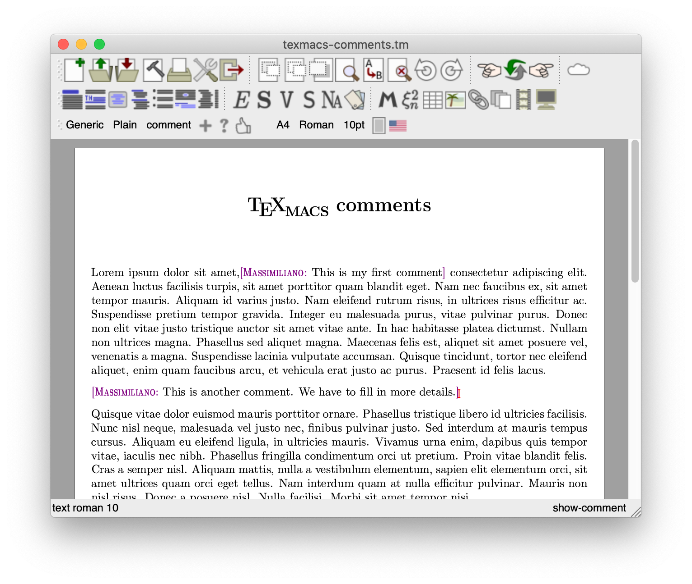
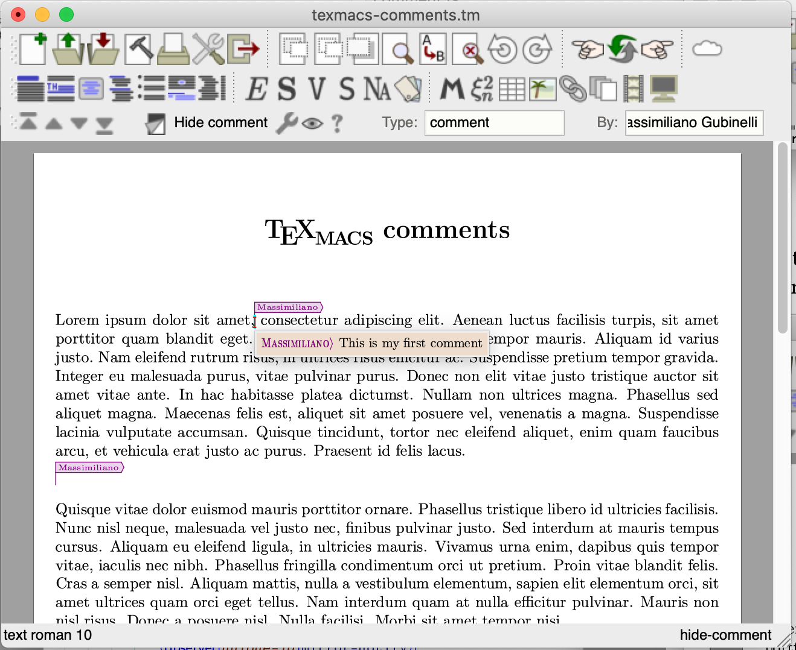

[main]Notes on TeXmacs
[main]Notes on TeXmacs
 [main]Notes on TeXmacs
[main]Notes on TeXmacs
The basic idea is to have a markup element to insert comments in documents. There should be facilities to hide/show all comments and remove all comments. Hidden comments do not affect the typesetting of the document and are shown via a flag, but can still be read via balloons which opens as the cursor is nearby a comment.
Here's an example of a document with two comments:

and here the same document with both comments hidden, showing the balloon the user sees when the cursor is nearby an hidden comment (indicated by a flag, here shown in the “detailed” mode).

We discuss the implementation of the basic functionality: comment tags and commands to operate on them. The first thing is to create a new package which the user has to include in the document in order to activate this feature. The package can be found in TeXmacs/packages/utilities/comment.ts. First we make sure that the appropriate menu is loaded as soon as the package become active. Menus are created and managed via Scheme code, so we load the scheme module (various comment-menu) which is found in the file TeXmacs/progs/various/comment-menu.scm:
<use-module|(various comment-menu)>
The module contains several macros, but the main interface is provided by the show-comment and hide-comment macros:
<assign|show-comment|
<macro|unique-id|mirror-id|type|by|time|body|<with|old-color|color|old-locus-color|locus-color|locus-color|preserve|<\locus|
<id|mirror-id>
|
<observer|unique-id|mirror-notify>
|
<\with|locus-color|old-color|color|<comment-color|by>|
<\surround|<extern|mirror-initialize|<quote-arg|body>>[<condensed|<name|<abbreviate-name|by>>>: |<if|<equal|<get-label|<quote-arg|body>>|document>|<right-flush>>]|
<with|color|old-color|body>
>
>
>
>>>
<assign|hide-comment|
<macro|unique-id|mirror-id|type|by|time|body|<with|old-locus-color|locus-color|locus-color|preserve|<\locus|
<id|mirror-id>
|
<observer|unique-id|mirror-notify>
|
<expand-as|body|<extern|mirror-initialize|<quote-arg|body>><flag|<abbreviate-name|by>|<comment-color|by>><hidden|body>>
>
>>>
We will enter later into the specific details of the implementation. Both macros collect various arguments unique-id, mirror-id, type, by, time, body. While show-comment renders the comment body as part of the document, with an indication of the author, as provided by the argument by, the hide-comment markup does not show up in the document directly since the evaluation of the associated macro results in a flag element together with the body of the comment inside an hidden element. We will discuss later on the role of the focus which wraps the content in both cases.
The hide-comment and show-comment elements provide the functional, descriptive side of the comment functionality. They are the “data structure” which encodes the comments. The scheme module (various comment-drd) give some classification of these two new elements:
;; General groups (define-group variant-tag (comment-tag)) (define-group similar-tag (comment-tag)) ;; Comments (define-group hidden-comment-tag hide-comment) (define-group comment-tag hide-comment show-comment)
A new group of tags comment-tag is defined which contains both markup elements and they are declared as variants, and also as similar tags [We need to conver the variant and similar concepts in another article].
On the procedural side, the available actions on comments, is made available to the user at the level of the editor via a set of scheme procedure in the (various comment-edit) module. The procedure make-comment creates a new comment in the current-buffer and at the current position
(tm-define (make-comment)
(let* ((id (create-unique-id))
(mirror-id (create-unique-id))
(by (buffer-get-metadata (current-buffer) "author"))
(date (number->string (current-time))))
(insert-go-to ‘(show-comment ,id ,mirror-id
"comment" ,by ,date "")
(list 5 0))))
Note the insert-go-to procedure, which insert a given markup and also move the cursor at the position (5 0), meaning the 6th child of the inserted subtree, i.e. the body of the comment (which is an empty string), and there in position \(0\), ready for the user to fill in the comment.
Basic operations on all the comments in a given document are provided by the following code
(define (comment-list)
(with-cache (change-time) :comment-list
(if (selection-active-any?)
(append-map search-comments (selection-trees))
(search-comments (buffer-tree)))))
(tm-define (operate-on-comments op)
(:applicable (nnull? (comment-list)))
(for (c (reverse (comment-list)))
(cond ((== op :show) (tree-assign-node c 'show-comment))
((== op :hide) (tree-assign-node c 'hide-comment))
((== op :cut) (tree-cut c)))))
In operate-on-comments the for loop cycle over all comments and according to the selected operation, it either convert all the node label to show-comment or to hide-comment, or in case (== op :cut), just remove the associated subtree, i.e. remove the comment and all its data. Note that the enumeration of all the relevant comment elements is operated by the comment-list function, which in turn uses search-comments defined as:
(tm-define (comment-context? t)
(and (tm-in? t (comment-tag-list))
(== (tm-arity t) 6)))
(tm-define (search-comments t)
(tree-search t comment-context?))
Finally, the functionalities are made available to the user via a menu and a shortcut in (various comment-menu) thanks to the code
(menu-bind comment-menu
("New comment" (make-comment))
---
("First comment" (go-to-comment :first))
("Previous comment" (go-to-comment :previous))
("Next comment" (go-to-comment :next))
("Last comment" (go-to-comment :last))
---
("Show comments" (operate-on-comments :show))
("Hide comments" (operate-on-comments :hide))
("Remove comments" (operate-on-comments :cut))
(with tl (comment-type-list)
(assuming (> (length tl) 1)
---
(for (tp tl)
((check (eval (upcase-first tp)) "v" (comment-test-type? tp))
(comment-toggle-type tp)))))
(with bl (comment-by-list)
(assuming (> (length bl) 1)
---
(for (by bl)
((check (eval by) "v" (comment-test-by? by))
(comment-toggle-by by)))))
---
("Edit comments" (open-comments-editor)))
(kbd-map
(:mode in-comment?)
("std :" (make-comment))
("std [" (go-to-comment :previous))
("std ]" (go-to-comment :next))
("std {" (go-to-comment :first))
("std }" (go-to-comment :last)))
which is loaded as soon as the package comment is used in the current document, as we have seen at the beginning of this article.
We want to allow the user to see all the comments together. This is
implemented via a “virtual document” which is generated on
the fly using TeXmacs file system (
(tmfs-permission-handler (comments name type)
(in? type (list "read")))
(tmfs-title-handler (comments name doc)
(with u (tmfs-string->url name)
(string-append (url->system (url-tail u)) " - Comments")))
(define (mirror-comment t)
(let* ((id (if (tm-atomic? (tm-ref t 0))
(string-append (tm-ref t 0) "-edit")
(create-unique-id))))
‘(mirror-comment ,id ,@(cdr (tm-children t)))))
(tmfs-load-handler (comments name)
(let* ((u (tmfs-string->url name))
(doc (tree->stree (buffer-get u))))
(tm-replace doc (cut tm-func? <> 'body 1)
(lambda (t)
(let* ((l (tm-search t comment-context?))
(r (map mirror-comment l)))
‘(body (document ,@r)))))))
(tm-define (open-comments-editor)
(:applicable (comments-in-buffer))
(let* ((u (current-buffer))
(cu (string-append "tmfs://comments/"
(url->tmfs-string u))))
(load-buffer-in-new-window cu)))
The most important instruction here is the call to tmfs-load-handler
which defines an new type of resource within the TeXmacs file system
The rendering of the mirror-comment markup is specified in the comment package, of course:
<assign|mirror-comment|<macro|unique-id|mirror-id|type|by|time|body|<with|old-locus-color|locus-color|locus-color|preserve|<locus|<id|mirror-id>|<observer|unique-id|mirror-notify>|<surround|<hidden|<extern|mirror-initialize|<quote-arg|body>>>||<document|<with|locus-color|old-locus-color|<document|<render-box-comment|<comment-color|by>|<copy|by>|<document|body>>>>>>>>>>